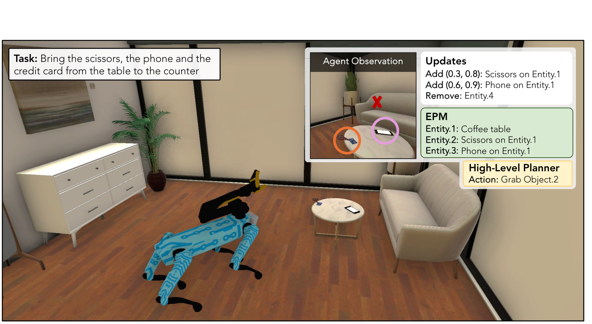
Planning with an Embodied Learnable Memory
International Conference on Learning Representations (ICLR), 2026
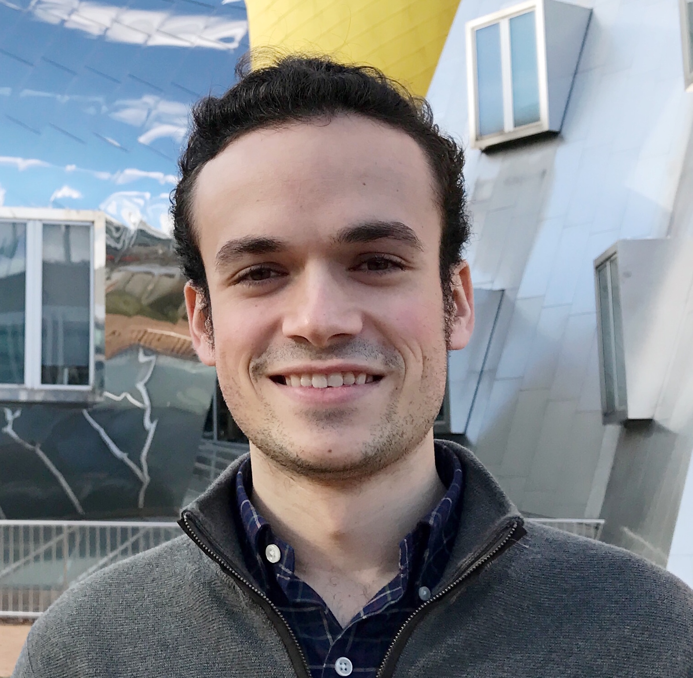
Co-founder at a stealth robotics startup
I am a co-founder at Versor, a robotics company using simulation to accelerate robot deployments. Before this, I was a Research Scientist at FAIR, working on Embodied AI. I completed my Ph.D. at the Computer Science and Artificial Intelligence Laboratory (CSAIL) of MIT, advised by Professor Antonio Torralba. Before that, I obtained a double degree in Computer Science and Telecommunications at the CFIS program of UPC.
I am interested in building agents that can assist and collaborate with humans. My research focuses on developing agents that can understand and anticipate human goals, and coordinate with them in performing complex tasks. I also study how to represent humans in simulation environments, including generating realistic motions and plausible high-level behaviors.
If you are interested in these areas, and would like to collaborate, or are interested in joining our team, reach out!

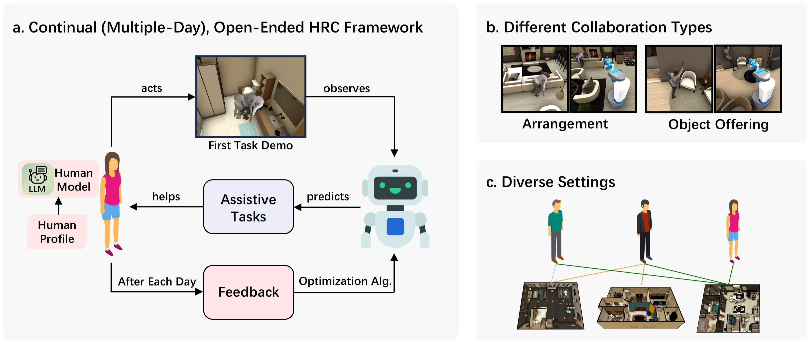
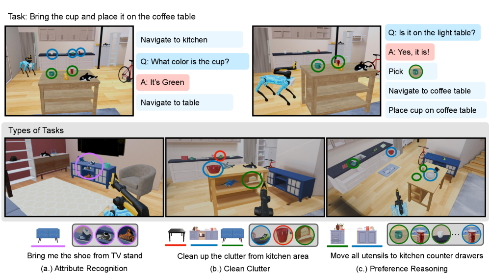
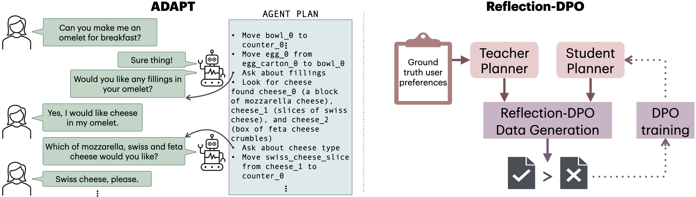
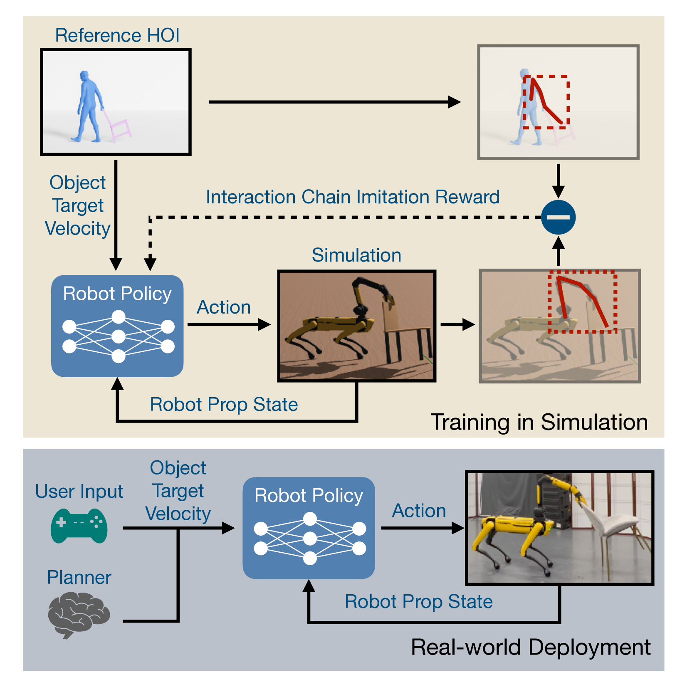
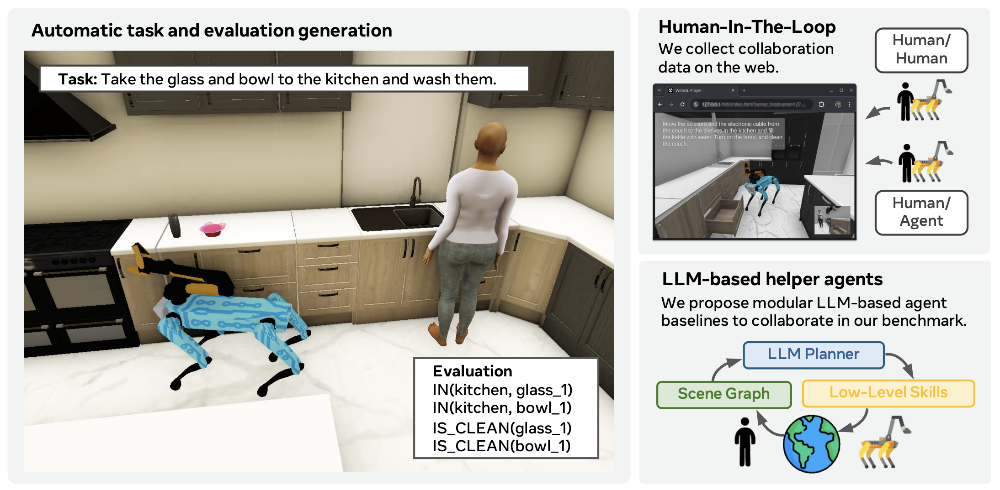
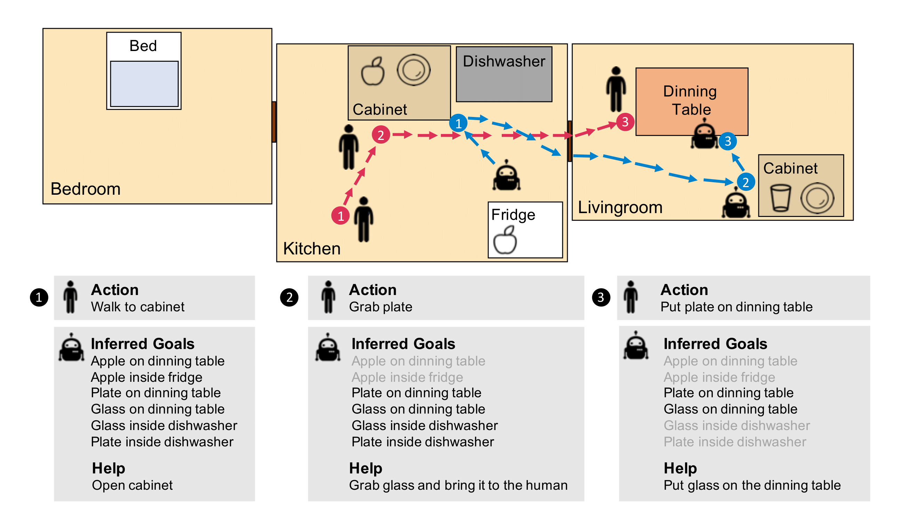
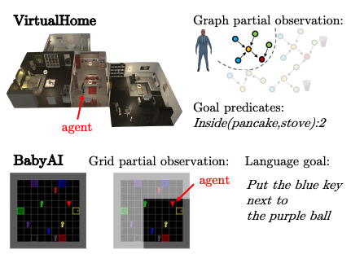
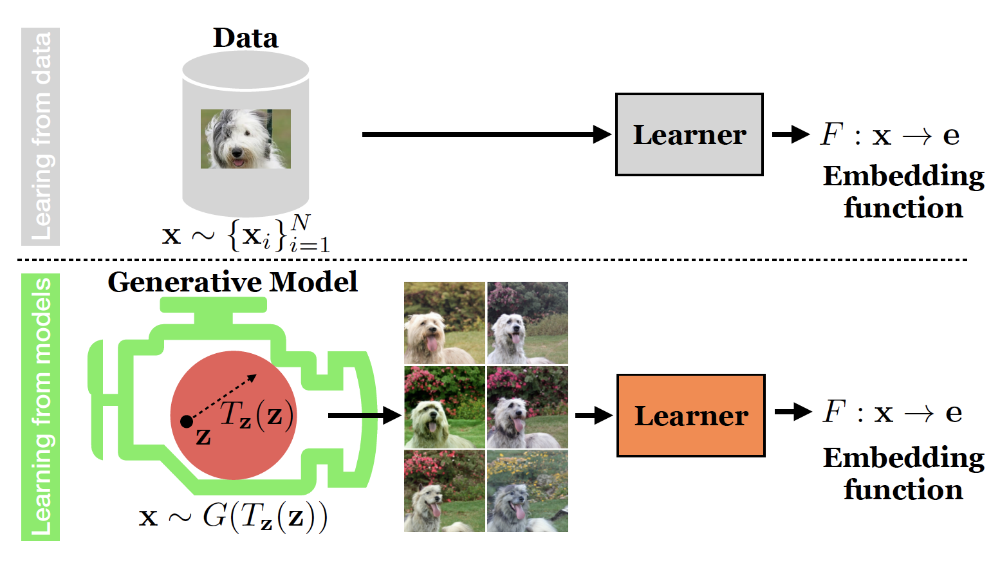
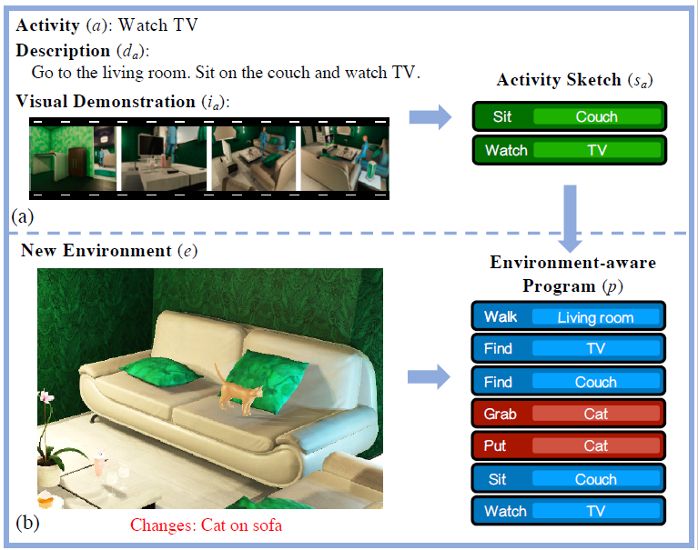
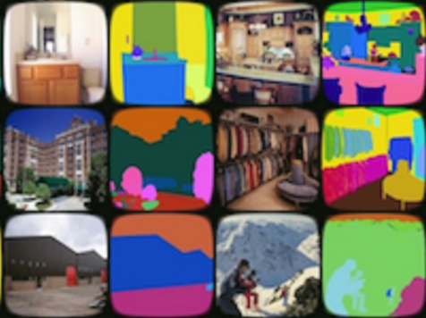
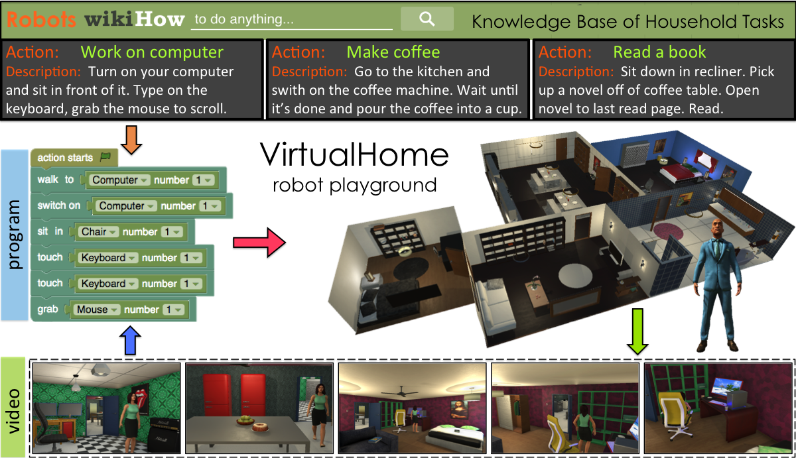
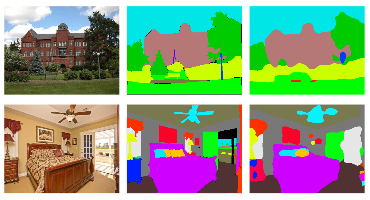
CVPR 2018, 2020 · ICCV 2019, 2021 (Outstanding Reviewer) · ECCV 2020 · NeurIPS 2020, 2021 · TVCG · IROS 2021 · IRJC 2021
Social Intelligence Workshop, ICRA 2021 · Social Intelligence Gathering, ICLR 2021 · Robust Vision Challenge Workshop, ECCV 2020
Co-chair of the MIT Vision Seminar (2018–2019) and Chair (2019–2021)